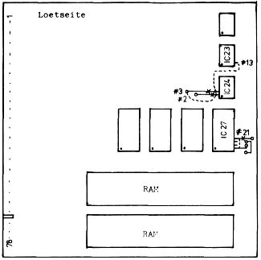
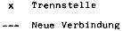
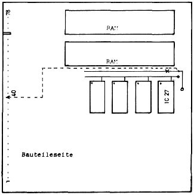

Nascom Journal |
Juli/August 1982 · Ausgabe 7/8 |
Auf einfache Weise läßt sich der PROM-Speicherbereich der Speicherkarte durch Austausch der EPROMs 2708 durch solche vom Typ 2716 vergrößern. Die erforderlichen Änderungen an der Speicherkarte sind minimal und lassen sich leicht durchführen.
Als Vorteil ergeben sich doppelter Speicherplatz – 8 k gegenüber vorher 4 k – und zusätzlich ein geringerer Strombedarf von 2,1 Watt gegenüber 6 Watt. Folgende funktionellen Änderungen sind durchzuführen:
1. Stromversorgung der EPROMs
2. Zuführung der Adresßleitung A10 an die EPROMs
3. Umschaltung des EPROM- Auswahldekoders auf die Adreßleitungen A11 und A12
Wie bisher ist auch jetzt der EPROM- Block nur zusammenhängend adressierbar (8 k-Block). Mit der Verbindung „P5“ (ROM-Select) sind jetzt jedoch zwei zusammenliegende 4 k- Ausgänge des Dekoders auszuwerten.
Beispiel: Gewünschte EPROM- Adressen:
1. EPROM A000-A7FF Dekoderanschluß Nr.15
2. EPROM A800-AFFF
3. EPROM B000-B7FF
4. EPROM B800-BFFF Dekoderanschluß Nr.16
Verbindung also P5 mit Ausgang 15 und 16.
Erforderliche Änderungen an der RAM- Karte im einzelnen:
1. Auf der Lötseite ist am IC27, Pin21 die Verbindung zur −5V Stromversorgung zu trennen und Pin21 mit Pin24 zu verbinden (+5V Stromversorgung).(Bild 1).
2. Auf der Bauteileseite ist am IC27, Pin19 die Verbindung zur +12V Versorgung zu trennen und eine neue Verbindung zwischen Pin19 und der Kartenanschlußleiste Nr. 40 herzustellen (Adreßleitung A10). (Bild 2).
3. Auf der Lötseite sind die Anschlüsse, die zum IC24, Pin2 und Pin3 führen, zu trennen und neu nach Bild 1 zu verschalten. Eine neue Verbindung ist zwischen IC24, Pin3 und IC23, Pin13 herzustellen.
Nascom Memory Card Functional Specification PF/003, Issue No.2
Falls es Nascom Anwender gibt, welche sich nicht trauen, ihre RAM- Karte umzubauen, übernehme ich gerne diese Arbeit einschließlich der Programmierung von 2716 EPROMs nach vorhandenen 2708.
Umbau einschließlich 1x2716 = 55.– DM, mit 2x2716= 85.–DM.
Ich hoffe, damit der Nascom- Gemeinde auch ’mal etwas Gutes tun zu können.
 
| Seite 7 von 60 |
|---|